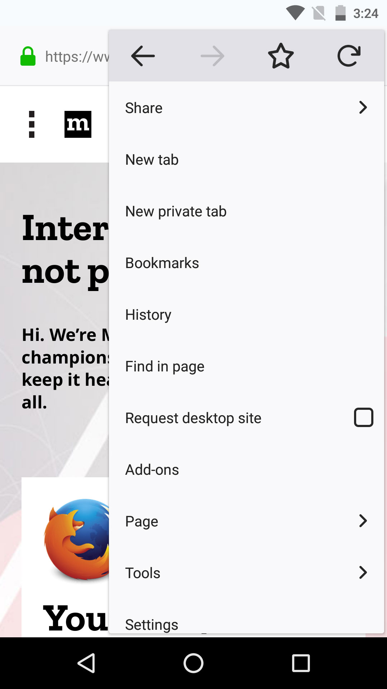
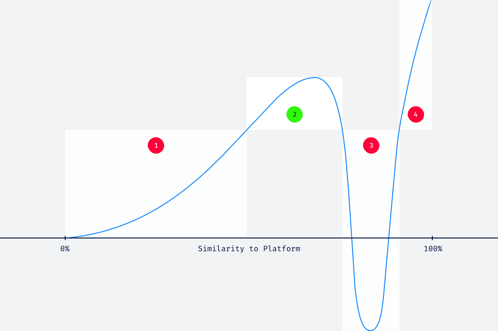

Design for Scale
These guidelines help you decide when it is important for your product or feature to use Firefox design language and when it is preferable to follow platform conventions.
Note that the guidelines below are prioritized. So align your work with the higher guideline before considering the next one.
Reuse What’s There
When building something new, try to reuse what we already have built and documented in Photon. This will make it feel familiar to Firefox existing users, and will be implemented quicker. Do not force it though. If it doesn’t fit, it doesn’t fit.
Prioritize Higher Visibility Work
The higher the expected visibility on parts of your work, the more important it is to align to Photon. If very limited visibility is expected, full alignment is of lower priority. Use platform components until you have time to better align.
Do not consider tradeoffs in very high visibility areas and loop in other designers working on that product or feature across platforms.
Imagine you’re prioritizing how to ship the first iteration of “Bookmarks Management on Mobile” feature. The first step is to tap the “Star” icon. The optional final steps are when the user edits the Name, Location and Keywords before they save their changes.
For the first step of tapping the “Star” (which has high visibility), you’ll want to align every aspect with the Photon Design System. But for the final steps (which are lower visibility), you can use a full-page system dialog in Android because it’s easier to implement and still aligned with the Android platform.


Balance Firefox Style and Platform Conventions
Do strike a balance between adapting too much platform and too little. It is especially important to stay clear of the Uncanny Valley.
Use our styles for visual appearance and tone, and use platform conventions for any pattern that is well established on a given platform. This will make the product or feature feel familiar to new users and still convey our style.

1. Bad Usability
So much Firefox UX that people do not feel familiar with the product
2. Sweet Spot
People feel familiar with the product, and recognize that it has its own identity
3. Uncanny Valley
So much platform that people do not feel the product, but not enough for it to feel fully native
4. No Brand
So much platform that people do not feel the product
When to use Platform Patterns
-
When you don’t want to break expectations about high level common platform functionality.
Using a platform system font creates platform cohesion and familiarity. Using a different font (like Comic Sans) would make the experience feel foreign and potentially off-putting.
-
When a UI pattern, appearance, or metaphor is so common deviating would cause user confusion or discomfort.
If window controls like Close, Minimize and Maximize are always on the left, moving these to the right would cause significant user confusion.
-
When a non-essential UI pattern, appearance, or metaphor enhances your product and helps close any uncanny valley gaps (strategic use of platform “flavor”).
Using Windows system colors or macOS / iOS blur effects conforms to a common platform pattern and reinforces nativeness.
When to deviate from Platform Patterns
-
When a UI pattern is common on other platforms or the web and is unlikely to cause discomfort or confusion.
While a hamburger or meatball menu is not always a native element of a platform, it has a strong presence on other common platforms and doesn’t conflict with other strong platform conventions.
-
When a UI pattern, appearance or metaphor doesn’t break any firm platform conventions but does enhance your UI or further other product goals.
In Content UI Surfaces (Preferences, Add-ons, etc.) are not a common UI pattern on many platforms, but do fit within Firefox’s UI and are an improvement for keeping all of our UI contained to one window.
Using Custom UI Colors deviates from common platform colors but is unlikely to cause confusion and further reinforces our custom brand and character.
Related Platform Guidelines
Platform |
Guideline |
|---|---|
Android |
|
iOS |
|
Linux |
GNOME Human Interface Guidelines. |
macOS |
|
Web |
|
Windows |